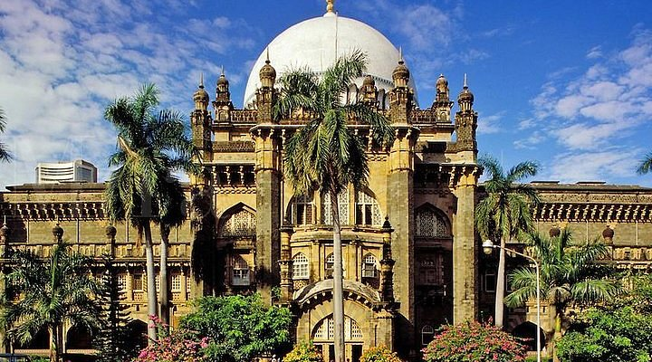
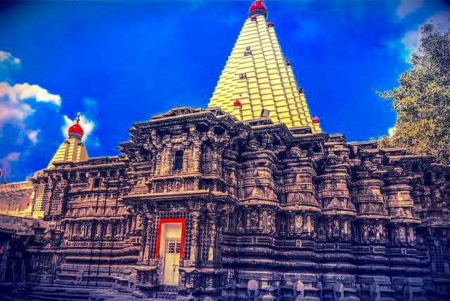
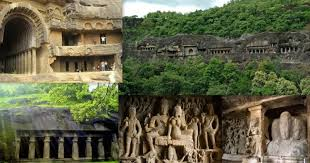
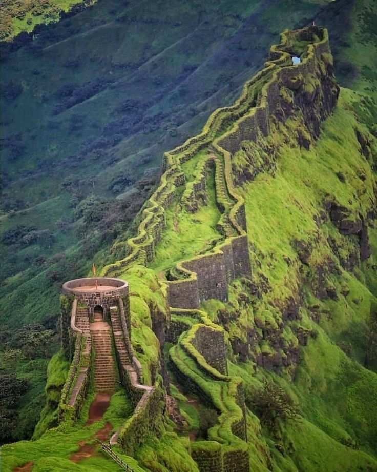
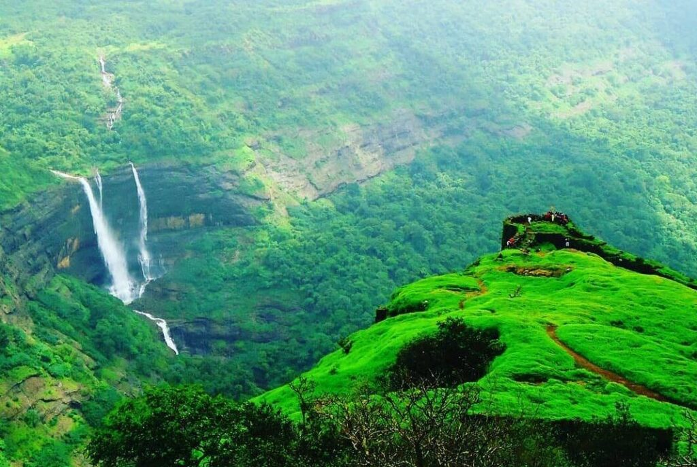
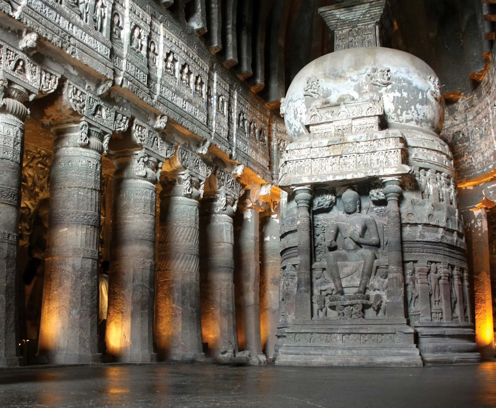
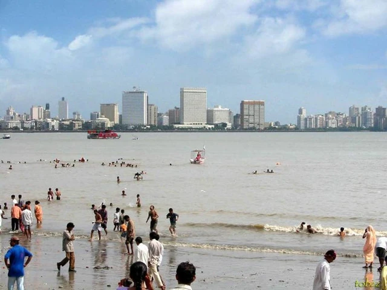
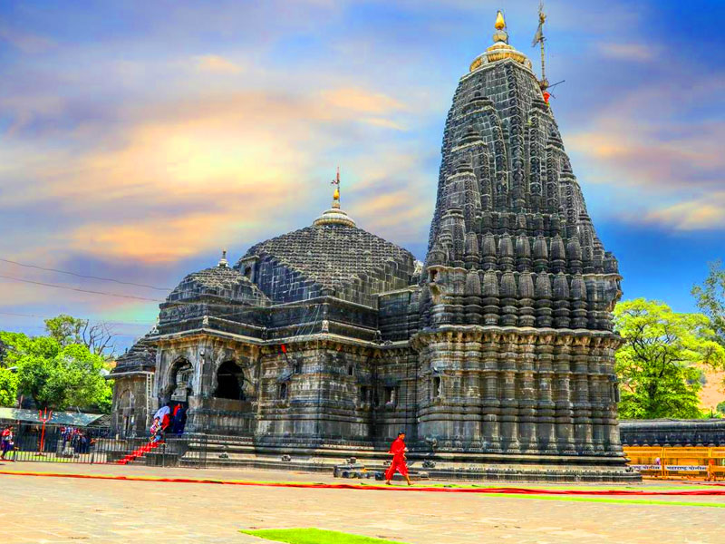
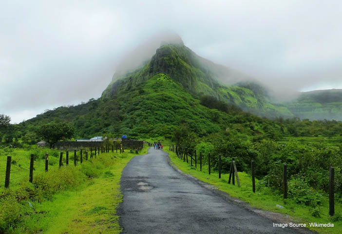
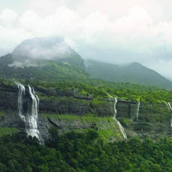

Chhatrapati Shivaji Maharaj Vastu Sangrahalaya

Mumbai’s Premier Museum of Art, History & Culture Formerly known as the Prince of Wales Museum, CSMVS is one of India’s most celebrated cultural institutions, located in the heart of Mumbai near the Gateway of India. Housed in a stunning Indo-Saracenic building surrounded by lush gardens, the museum offers a captivating journey through centuries of Indian and world heritage.
- Over 50,000 Artifacts: From ancient sculptures and miniature paintings to decorative arts and natural history.
- Thematic Galleries: Explore Indian archaeology, Himalayan art, European paintings, and more.
- Special Exhibitions: Rotating displays and curated shows that highlight global and local cultures.
- Educational Programs: Workshops, guided tours, and interactive sessions for students and families.
Hanging Gardens

A Green Escape atop Malabar Hill. Also known as Pherozeshah Mehta Gardens, the Hanging Gardens are one of Mumbai’s most beloved public parks, offering a peaceful retreat from the city’s hustle. Perched atop Malabar Hill, these terraced gardens overlook the Arabian Sea, providing spectacular sunset views and a breath of fresh air.
Gateway Of India Mumbai

Mumbai’s Majestic Archway to History. The Gateway of India is one of Mumbai’s most iconic landmarks, standing proudly on the waterfront of Apollo Bunder, overlooking the Arabian Sea. Built in 1924, this grand arch-monument commemorates the visit of King George V and Queen Mary to India in 1911. Today, it serves as a symbol of Mumbai’s colonial past and its vibrant present.
Maha-laxmi temple

A Sacred Jewel by the Sea The Mahalaxmi Temple, nestled along Bhulabhai Desai Road in South Mumbai, is one of the city’s oldest and most revered Hindu temples. Dedicated to Goddess Mahalaxmi, the deity of wealth and prosperity, the temple also houses idols of Mahakali and Mahasaraswati, forming the divine trinity of feminine power.
Elephanta caves

A Timeless Island of Stone & Spirit Located on Elephanta Island (Gharapuri), just 11 km east of Mumbai’s Gateway of India, the Elephanta Caves are a UNESCO World Heritage Site that showcase India’s ancient rock-cut architecture and spiritual artistry. These caves, carved between the 5th and 8th centuries CE, are dedicated primarily to Lord Shiva, with a few Buddhist structures as well.
Raigad Fort

Raigad Fort is a historic hill fort and capital of the Maratha Empire, founded by Chhatrapati Shivaji Maharaj in 1674 AD. Located in Maharashtra's Sahyadri mountains, it is a strategically important landmark and a sacred site associated with the vision of Hindavi Swarajya. The fort complex features architectural remnants like palaces, a royal mint, and the Samadhi (mausoleum) of Shivaji Maharaj, accessible by road, foot, or a four-minute ropeway ride.
Lonavala

Lonavala, a popular hill station nestled in the Sahyadri range of Maharashtra, is a haven for nature lovers, adventure seekers, and history enthusiasts. Renowned for its lush greenery, cascading waterfalls, mist-covered hills, and ancient forts, Lonavala offers an idyllic escape from the hustle and bustle of city life.
Ajanta Caves

The Ajanta Caves are located in the Aurangabad district of Maharashtra, India, and consist of 30 rock-cut caves that were excavated in two distinct phases between the 2nd century BCE and the 6th century CE. These caves are celebrated for their intricate Buddhist art, including paintings and sculptures that depict the life of the Buddha and various Buddhist deities.
Juhu Beach

Juhu Beach in Mumbai is among the famous beaches of India. It faces the Arabian Sea, and it’s the longest beach in Mumbai. The place is known for its street food stalls, the soothing views of the sunset and also, for encounters with celebrities.
Trimbakeshwar Temple

Trimbakeshwar Temple is special because it houses one of the 12 Jyotirlingas, a three-faced Shiva Linga representing the deities Brahma, Vishnu, and Shiva. It is a significant pilgrimage site located at the source of the Godavari River and a major center for performing rituals like Kala Sarpa Dosh Nivaran to alleviate negative astrological influences. The temple is architecturally distinct, built of black stone, and is famous for its Kushavarta sacred pond, which is considered the source of the Godavari River.
Khandala

Khandala is a charming hill station in the Western Ghats, Maharashtra, near Lonavala, popular for its lush green scenery, waterfalls, and panoramic views of the Sahyadri mountain range. It serves as a convenient weekend getaway from Mumbai and Pune, featuring viewpoints like Tiger's Leap and Duke's Nose, historical caves such as Karla and Bhaja, and lush landscapes perfect for nature lovers and trekkers. The monsoon season (June-September) is particularly beautiful, though the best time to visit for clear views is typically October to May.
Sahyadri Hills

The Sahyadri Hills are another name for the Western Ghats mountain range, a significant geological and ecological feature in India that stretches 1,600 km parallel to the western coastline, passing through the states of Maharashtra, Gujarat, Goa, Karnataka, Kerala, and Tamil Nadu. Known for their rich biodiversity and as a UNESCO World Heritage Site, the Sahyadris are home to numerous national parks, wildlife sanctuaries, and scenic trekking trails. The range serves as the origin for major rivers of Peninsular India and features distinct regional names like Sahya Parvatam in Kerala.